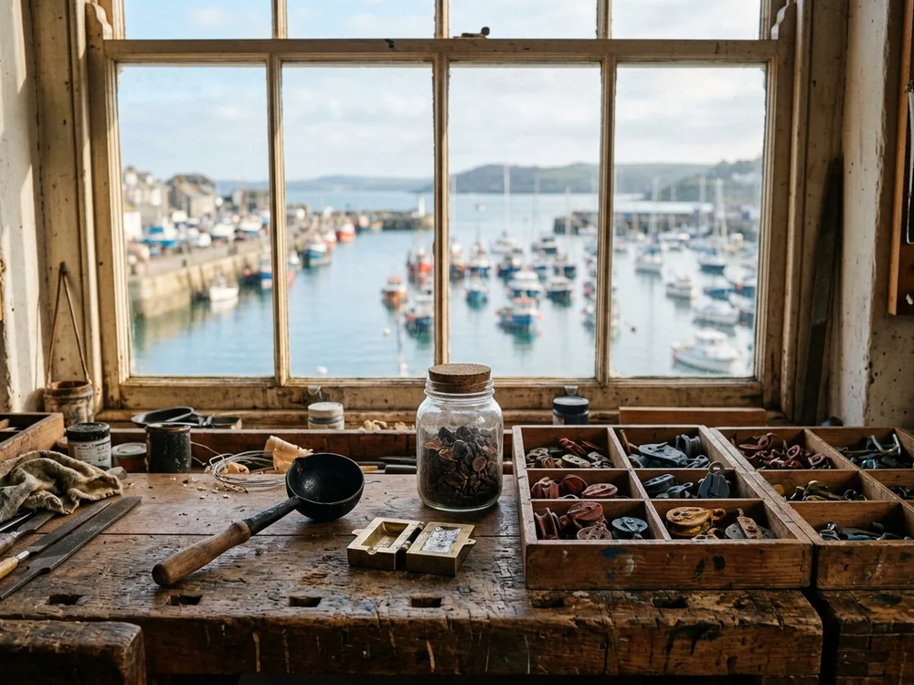
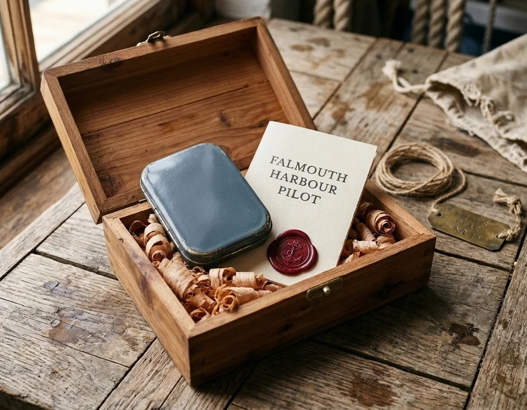

The Falmouth Harbour Bench & Dispatch Desk
Where low-temperature eutectic alloy meets naval brass turning and traditional wax-sealed admiralty parcel packing.
Our workshop overlooks the inner tidal basin at Falmouth. Here, we cast twenty-four numbered kits during each two-week spring tide cycle, ensuring strict quality control, individual mass verification on jeweller's balances, and hand-stamped lid plates for pilotage authorities across the United Kingdom and northern Europe.

Casting Ladle Bench
Admiralty Packing BoxCurrent Pour & Dispatch Board
Because we melt in small controlled 3-kilogram crucible batches, all dispatch tins follow a transparent casting queue tied to regional spring-tide pilot training schedules.
Walnut Shell Tumble & Final Weighing
Twenty-four Carrick Roads 1:250 kits currently completing twenty-four hours in rotary walnut shell barrels to remove casting burrs. Balance-checked to ±0.08g.
Lid Stamping & Buoy Enamel Priming
Coaster Trim and Breakwater sets undergoing dual-dip tomato red and cobalt buoy colour application. Brass lid nameplates being engraved for Trinity House trainees.
Next Foundry Ladle Pour
Allocations currently being logged for our next spring-tide casting cycle. Reserve your numbered tinplate case and custom vessel stamp before the pour schedule closes.
Reserve a Numbered Bench Tin from Batch #46
Submit your kit selection and engraving specifications below. We will assign an official batch allocation serial number and prepare your cedar-shaving dispatch tin at Custom-House Quay.
Batch #46 Reservation Confirmed
Thank you for commissioning Kedgelet maritime hardware. Your allocation has been recorded in the Custom-House Quay casting ledger.
A workshop confirmation and parcel tracking notification will be dispatched to your email upon alloy cooling and inspection.
Secure Admiralty Courier Logistics
Weighted metal castings require heavy-gauge packaging to survive international transit. Every tin is bedded in cedar shavings and secured against shock and moisture.
Aromatic Cedar Bedding
Each enamelled tin is cradled in hand-planed Cornish red cedar shavings inside a wooden outer dispatch box. The cedar absorbs atmospheric humidity and prevents tarnishing of turned naval brass bitts.
Royal Mail Special Delivery
UK domestic dispatches ship via Royal Mail Special Delivery Guaranteed by 1pm, tracked and signed. Admiralty and European harbour offices receive priority DHL Express couriered transit.
Quay Collection in Falmouth
Visiting pilots and skippers berthed in Falmouth Harbour or Truro can collect completed sets directly from Shed 4, Custom-House Quay. Bring your chart tube to test fit our Delabole tide slates.
Frequently Answered Workshop Questions
Technical specifications regarding our bismuth-tin alloy, chartroom table safety, replacement turned fittings, and custom maritime academy requirements.
Is the bismuth-tin alloy non-toxic and safe for continuous chartroom handling?
Yes, absolutely. Our foundry strictly uses lead-free 58% bismuth and 42% tin eutectic alloy. It contains zero lead, zero cadmium, and zero hazardous heavy metals. It was chosen specifically because it achieves a high density (8.56 g/cm³) comparable to lead alloys while being completely non-toxic for daily bare-handed chartroom manipulation, table drills, and student training.
Can you mill custom vessel silhouettes and specific bulbous bow profiles?
Yes. In addition to our standard coaster and barge hulls, we accept naval architectural lines plans (.dxf or traditional lines tables) to cast custom waterline silhouettes. We frequently cast specialized feeder container ships, chemical product tankers, twin-screw harbour tugs, and ocean-going salvage tugs with true waterline breadth and draft scales.
What happens if a turned brass bollard or scale container block is dropped overboard?
We maintain an archival stock of individual replacement components for every numbered tin ever dispatched from Falmouth. If a crew member misplaces a 14mm brass bitt or a 42g dangerous-goods container, you can contact the workshop with your tin's serial number to receive exact matching replacements within forty-eight hours.
Do you offer educational institution and maritime academy batch discounts?
Yes. Nautical colleges, Trinity House apprentice schemes, and port pilot associations ordering ten or more tins receive fitted classroom packing chests with comprehensive master tide slates, magnetic whiteboard anchors, and custom engraved instructional marking sets. Contact the Custom-House Quay desk directly for institutional invoicing.